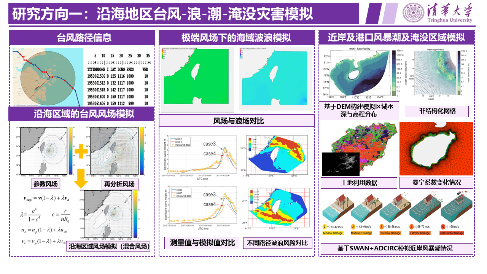
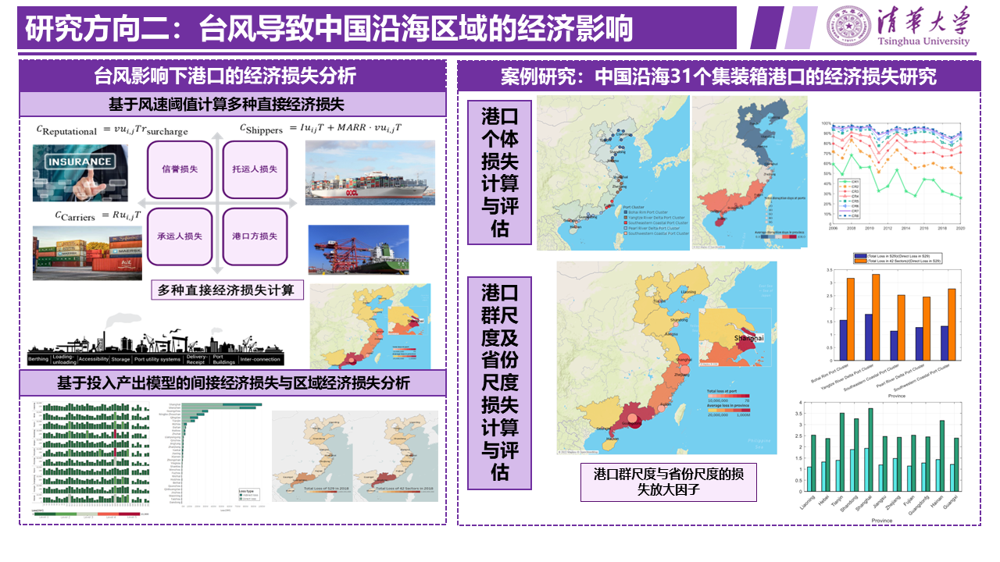
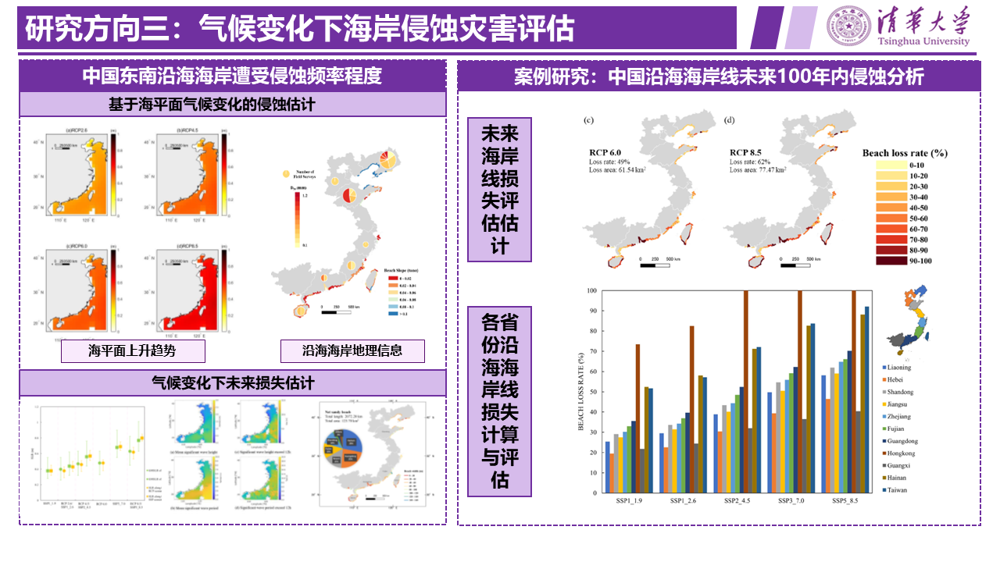
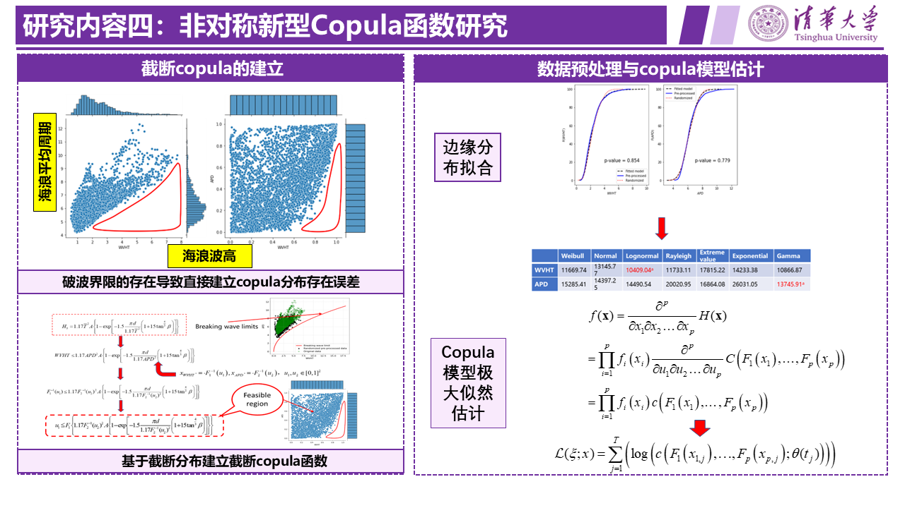
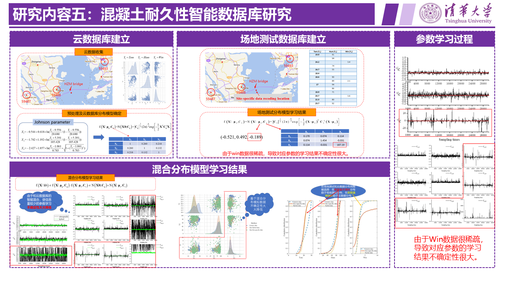
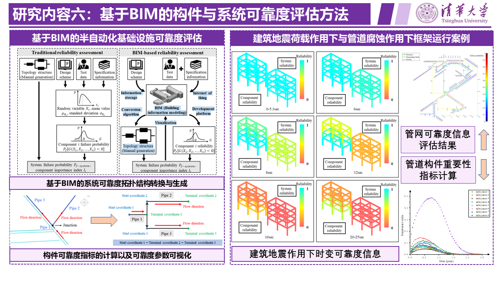
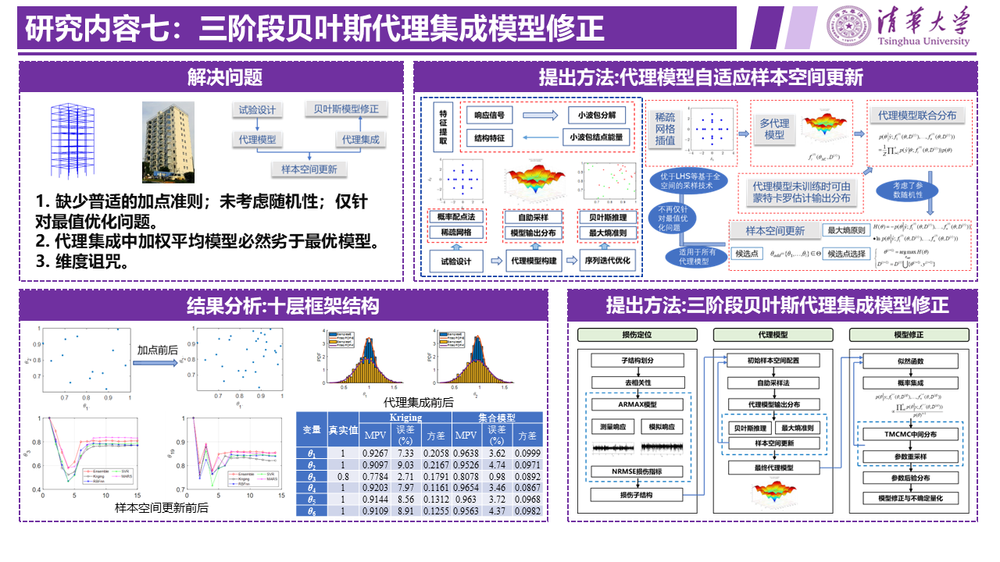
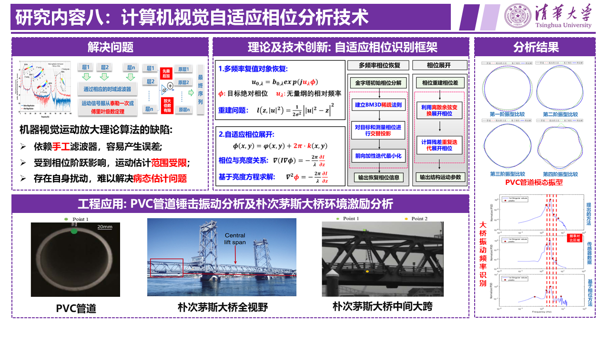

研究工作

研究生: 田真诗怡，江常源
内容:
台风是影响海南岛的重要自然灾害之一，通常伴随着风暴潮和强风浪等其他灾害现象，从而对人类生命和财产构成巨大威胁。
研究通过基于台风路径信息的参数化风场和ERA5再分析风场相结合，建立了混合风场。使用ADCIRC+SWAN耦合模型模拟台风风场和波浪的相互作用，
结果显示混合风场模型与实测值相比表现良好。最后通过收集整理沿海区域地理信息数据，模拟近岸风暴潮情况。

研究生: 田真诗怡，江常源
内容:沿海港口运输作为全球海上物流运作的关键要素，常受到台风、风暴潮、大雾等多种自然要素的影响。为了应对这些挑战，
本课题组开发了一套基于物理模型的港口运营中断的风险评估与经济损失量化框架。在该框架中，我们一方面考虑了极端天气现象对港口运营功能的影响，
另一方面也关注了港口与其他工业群或经济部门的相互作用。
1. 基于集装箱港口运营中断提出了天气影响下的多种经济损失评估指标 (Zhang & Lam, 2015)。我们将这些指标应用于中国上海、宁波、深圳与广州四个地区的沿海港口，
从而揭示不同地区在面对极端天气时可能遭受的经济损失 (Zhang et al., 2020)。
2. 基于单一集装箱港口量化港口与关联工业群或经济部门的相互作用。这部分研究采用了Petri网和投入产出模型，通过这两种方法分别对集装箱港口中断后对其他工业群或经济部门的影响进行了系统模拟 (Zhang & Lam, 2016; Tian et al., 2023)。我们将这些模拟应用于多个中国沿海集装箱港口，从而深入了解了港口中断可能带来的连锁反应和影响范围。
参考文献：
Zhang, Y., Lam, J.S.L.* (2015): Estimating the economic losses of port disruption due to extreme wind events. In: Ocean & Coastal Management, 116, 300-310.
Zhang, Y., Lam, J.S.L.* (2016): Estimating economic losses of industry clusters due to port disruptions. In: Transportation Research Part A: Policy and Practice, 91, 17-33.
Zhang, Y., Wei, K.*, Shen, Z., Bai, X., Lu, X., Soares, C.G., (2020): Economic impact of typhoon-induced wind disasters on port operations: A case study of ports in China. In: International Journal of Disaster Risk Reduction 50, 101719.
Tian, Z., Zhang, Y.* Udo, K., Lu, X. (2023): Regional economic losses of China‘s coastline due to typhoon-induced port disruptions. In: Ocean & Coastal Management, 237, 106533.

研究生: 田真诗怡，江常源

研究生: 马鹏飞
内容:
对于海洋工程可靠性设计和风险评估来说，准确刻画多变量海洋参数至关重要。为了充分了解海洋环境条件，我们需要一个稳健而精确的多变量模型来分析和估计海洋状态。
因此，先进的海洋参数模拟对于改进海洋工程实践非常有帮助。在本研究中，我们开发并采用了一种新型的联合分布模型原理，即截断联合分布模型，用于建模多变量海洋数据。
与以往纯数学拟合技术对非对称海洋数据进行建模的研究不同，本研究提出了一种基于物理极限的截断方法来研究非对称相关的海洋数据。我们通过使用真实的环境观测数据，
对比了截断联合分布模型与文献中传统的对称和现有的非对称联合分布模型。我们对各种常用的传统联合分布模型进行了截断技术的修改，并将其应用于美国海岸附近浮标收集的多变量海洋数据的拟合。
通过对海洋数据的拟合，我们比较了不同联合分布模型的优缺点，并讨论了它们在数据模拟和极值预测方面的特性。

研究生: 马鹏飞
内容:
混凝土耐久性分析所需的完整稳定数据库具有重要意义。然而，当前的耐久性数据库通常过于局限于特定工地，这是一个关键挑战。
当我们分析某个具体工地时，从通用数据库中得出的模型可能并不完全适用于该工地。相反，仅基于有限特定工地数据所建立的模型，往往会因统计误差较大而不够精确。
本研究提出了一种创新的数据驱动方法，用于构建一个智能混凝土耐久性数据库。所提出的数据库设计基于特定工地和通用数据库的智能结合，当特定工地数据充足时，以特定工地数据为主；
而在特定工地数据稀缺时，则以通用数据为主。这一方法能够处理工地调研中常见的数据缺失问题，并量化不确定性。为了验证该方法的有效性，我们给出了一个真实应用示例，即为港珠澳大桥提供耐久性数据。
数据库设计的主要问题包括数据预处理、缺失数据恢复以及特定工地数据的转换。研究结果表明，所提出的方法能够显著捕捉特定工地数据中的相关规律，并且即使在数据稀缺的情况下，仍能进行有意义的预测。

研究生: 郑意德
内容:本研究提出了一种结构安全时变分析与系统分析的BIM-可靠性集成技术。在开发的框架中，首先从BIM模型中提取构件可靠性计算的参数信息。
然后将BIM模型转换为系统拓扑结构，基于转换后的结构，通过随机方法进行风险评估。在短期分析中，考虑到材料性质和制造尺寸的随机性，通过集成REVIT-Dynamo和OpenSees进行结构分析。
在长期分析中，采用变换拓扑算法和随机腐蚀模型计算了每根管道在其使用寿命期间的时变可靠度和重要性指数。
研究发现，BIM-可靠性集成技术可以有效地评估时间效应对结构安全性的影响，对于工作环境和工作条件未知的结构具有重要意义。

研究生: 林光伟
内容:本研究提出了一种基于集成学习的贝叶斯模型修正方法用于结构损伤诊断。结构开始被分解为一组子结构。
通过建立基于结构运动方程的自回归移动平均（ARMAX）模型，定位发生损伤的子结构，以损伤子结构代替完整结构进行后续分析。
利用小波包分解提取不同频带的损伤敏感结点能量，构建若干个异构代理模型。通过自助采样法进行重采样，以概率融合的形式将其组合得到集成模型。
并采用最大熵原理搜索新的设计点进行样本空间更新，通过迭代，提出了一种基于代理集成学习的模型修正框架。

研究生: 蔡恩健
内容:
本研究针对传统相位运动识别方法的不足，综合考虑相位传播的稀疏性及阶跃问题，提出了相位重建运动识别框架；使用基于亮度转移方程的相位展开方法，对原始复值可操纵金字塔的估计差进行再次修正，从而更深层地解决阶跃问题。